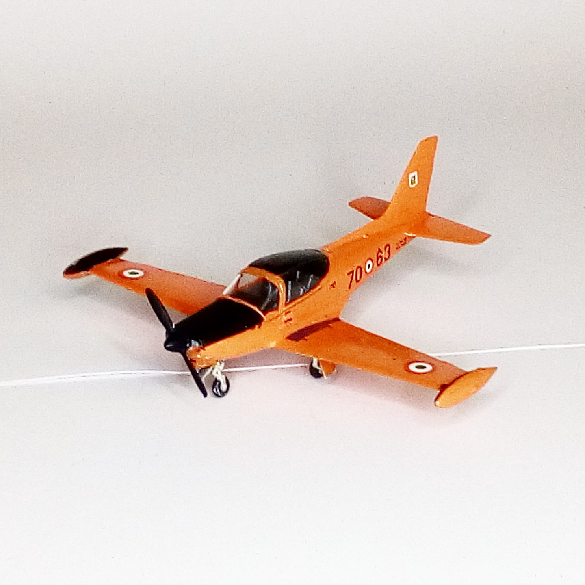

Aerei · scale model archive
SIAI-MARCHETTI SF-260 AM
SIAI-MARCHETTI SF-260 AM — Kit: Special Hobby, Scale: 1/72. Beautiful a/c lines, reproduced by a cute tiny little kit #1/72 #SpecialHobby

Photo gallery
English description
Beautiful a/c lines, reproduced by a cute tiny little kit
#1/72 #SpecialHobby
Descrizione italiana
Bella aereo linee, reproduced by una grazioso minuscolo piccolo kit.